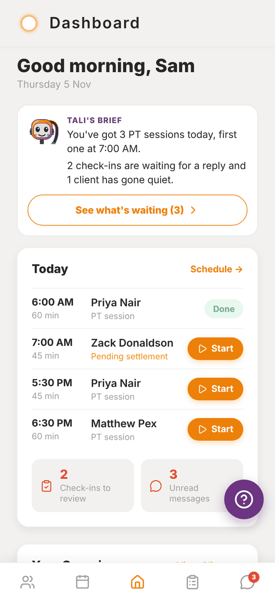
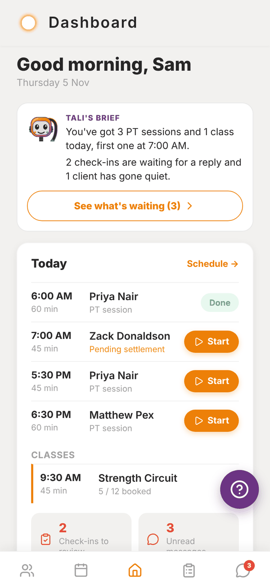

Totality for trainers
Welcome to Totality for trainers
What Totality does for a personal trainer, how the app is laid out, and where to start.
Totality is where you run your coaching. You build programmes, run sessions with clients, read their weekly check-ins and food logs, book appointments, message them and take payments, all in one app. Your clients use the same app on their side to train, log food and check in with you.
This guide covers everything a trainer can do, whether you work for yourself or inside a gym that uses Totality. Where the two work differently, the page says so.


Independent trainer or gym trainer?#
There are two kinds of trainer account. Work out which one you are, because a few things change.
| Independent trainer | Trainer at a gym | |
|---|---|---|
| Who pays for Totality | You. Start on the 7 day trial, then Free or a Solo plan | Your gym. You pay nothing |
| Client limit | Your plan's limit (3 on Free, 5 to 200 on Solo plans) | Shared across the whole gym's plan |
| Tali AI credits | Your plan's monthly credits | Shared with everyone at the gym |
| Payments | Go to your own Stripe account (with the POS add-on) | Go to the gym's account |
| Extra screens | Revenue, My Products, Branding | Gym Members, Classes, My shifts |
You become a gym trainer when a gym invites you and you accept. See Joining a gym.
How the app is laid out#
Five tabs sit along the bottom:
- Clients: your roster. Tap a client to see everything about them.
- Schedule: your week of PT sessions (and classes, at a gym). Book from here.
- Home (the middle tab): Tali's brief, Today, your shortcuts and the week at a glance.
- Check-Ins: weekly check-ins from your clients, waiting for your reply.
- Messages: chats with each client, and a message to all of them at once.
Everything else is a shortcut on Home: My Programmes, Exercise Library, Auto-Regulation, Reports, POS, Shop, My Training, My Nutrition, Calorie Calc and Settings.
The purple ? button that floats in the corner of every screen opens Report an Issue, which sends a ticket straight to the Totality team.
Where to start#
- Sign up and take the short tour.
- Invite your first client.
- Build a programme and assign it to them.
- Run a session together, or let them train on their own.
Where Totality runs#
Totality runs on iPhone, Android and the web at totalityapp.com.au. Your account is the same everywhere, so you can build programmes on a laptop and run sessions on your phone. Push notifications only come through the phone app.
Updates arrive over the air. If something in this guide looks different to your screen, close the app fully and open it again to load the latest version.
Questions#
Is Totality free for trainers?
Independent trainers can stay on the Free plan for as long as they like, with up to 3 clients and no Tali AI. Every new account starts with a 7 day trial of everything. Trainers at a gym are covered by the gym's plan. See Plans and prices.
Do my clients pay for the app?
No. Your clients use Totality for free as your clients. You can charge them for your coaching through Totality if you want to. See Getting paid.
I also own a gym. Is this the right guide?
This guide is for trainers. Gym owners and admins have their own guide with the admin portal, members, billing and staff.
Can I use Totality on a computer?
Yes. Go to totalityapp.com.au in any browser and log in with the same email and password.